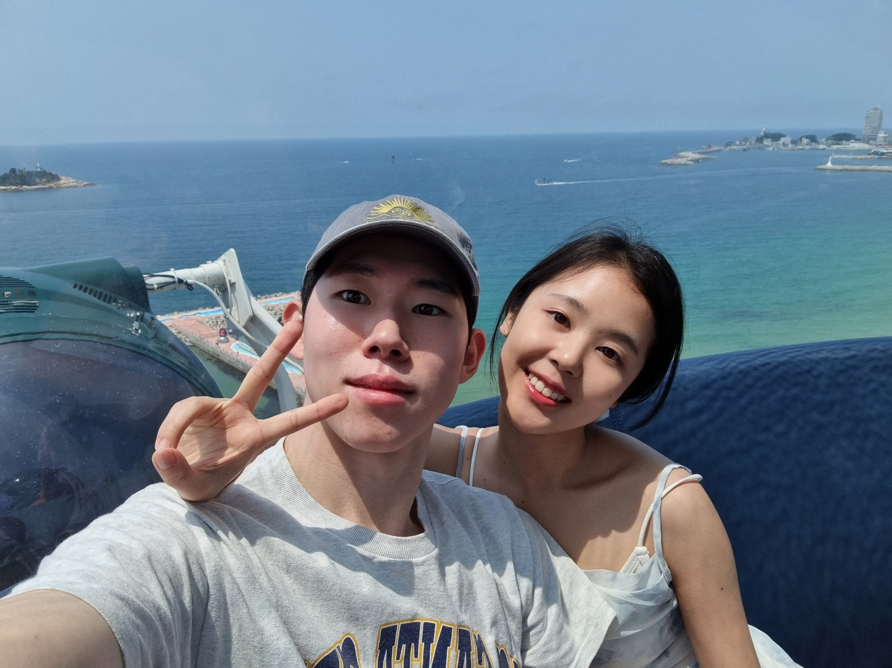

김지원(여, 28세)은 그녀의 꿈을 현실로 만들었습니다. 그녀는 교육 프로그램 기획자로서 세계 어디든 노트북과 함께 프로그램을 기획하며 놀라운 경험과 지식을 다양한 사람들과 나누고 있습니다. 그녀의
남자친구, 김민석
또한 자신의 꿈을 이루었습니다. 그는 그가 항상 꿈꿔왔던 타코집을 창업하여 세계적으로 유명한 프랜차이즈로 만들었습니다. 그의 타코집은 맛있는 음식과 유쾌한 분위기로 사람들에게 사랑받고 있으며, 사업이
번창하면서 그는 더 이상 일을 하지 않아도 풍족한 삶을 누릴 수 있게 되었습니다.
이제 김지원과 김민석은 함께 세계 여행을 즐기며 여유롭게 삶을 즐기고 있습니다. 과학의 발전으로 모든 것이 편리해진 세상에서, 그들은 안전하고 평화로운 곳에서 행복한 가정을 이루었습니다. 그들의
이야기는 꿈을 이루는 힘과 무한한 가능성을 믿는 우리 모두에게 영감을 주고 있습니다. 그들은 단순히 꿈을 쫓는 것이 아니라, 그 꿈을 현실로 만들어 내는 모범이 되었습니다. 이처럼, 김지원과
김민석의 이야기는 사랑과 성취의 조화로 이루어진 디즈니 애니메이션 세계 같은 현실을 우리에게 상기시키며, 우리가 향상된 미래를 만들어 나갈 수 있는 희망을 주고 있습니다.
김지원, 성공과 행복을 나눠주는 사랑의 풍요로운 여정
재산과 명예를 품은 두 사람, 가난한 지역의 미래를 밝히며 보답
과학이 발전하고 편리한 삶이 가능한 세계에서 꿈을 이룬 김지원은 자신들의 성공을 사람들과 나누는 일에 전념하고 있습니다. 그녀는 재산과 사회적 명예가 모두 사람들의 지지와 도움 덕분이라고
생각하며, 이에 보답하기 위해 다양한 사회봉사활동을 펼치고 있습니다.
특히, 산간 지역에 있는 학교나 분교로 봉사를 자주 가며 어린 학생들과 함께 시간을 보내고 지원을 제공하고 있습니다. 그들은 이 지역의 미래를 밝히기 위해 교육에 투자하고, 어려운 환경에서도 희망을
키울 수 있는 기회를 제공하려고 노력하고 있습니다.
"I want to share the love I've received."
. "우리의 행복은 나누고 나눔의 행복을 찾다."
이러한 행동은 그들의 가난한 지역사회에서 큰 변화를 일으키고 있으며, 그들은 재산과 명예를 통해 얻은 행복을 나눔으로써 더 큰 의미를 부여하고 있습니다. 김민석과 김지원은 자신들의 성공을 나누고,
나눔의 행복을 찾아가며 사회에 긍정적인 영향을 끼치고 있습니다. 그들의 이야기는 우리에게 사랑과 나눔의 소중함을 상기시키며, 더 나은 세상을 향한 지속적인 희망을 심어줍니다.
김지원과 그녀의 남자친구, 세계를 변화시키는 꿈의 창조자
우리는 함께 미래를 디자인하고 긍정적인 에너지로 세상을 바꿀 것이다.
세계를 여행하며 다양한 경험을 쌓은 김지원은 이제 그 경험을 활용하여 세계 각지의 사람들을 아우르는 교육 프로그램을 기획하고 있습니다. 그녀는 다문화 환경에서의 학습과 협력의 가치를 믿으며, 이를
토대로 국경을 넘어 사람들을 연결하고자 합니다. 그녀의 비전은 세계 어디에서나 이용 가능한 교육 프로그램을 통해 지식과 이해를 공유함으로써 세계를 더 풍요롭고 이해심 깊은 곳으로 만드는 것입니다.

한편, 그녀의 남자친구 역시 혁신적인 비즈니스 아이템을 개발 중에 있습니다. 그의 아이디어는 기존의 사업 모델을 뒤집어 놓고 새로운 방식으로 사회에 기여할 것을 모색하고 있습니다. 그는 긍정적인
변화와 혁신을 추구하며 미래의 비즈니스 모델을 디자인하고 있습니다.
김지원과 그녀의 남자친구는 긍정적인 에너지와 창의성으로 세상을 바꾸기 위해 노력하고 있습니다. 그들의 꿈은 세계를 변화시키는 일에 기여하고, 사람들 간의 연결과 이해를 증진시키며 더 밝은 미래를
만드는 것입니다. 그들의 이야기는 우리에게 미래에 대한 희망과 변화의 중요성을 상기시키며, 함께 미래를 디자인하고 긍정적인 에너지로 세상을 바꾸는 모습에 기대를 가지게 합니다.